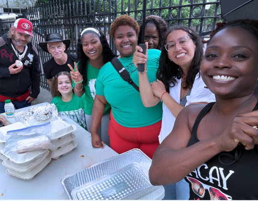
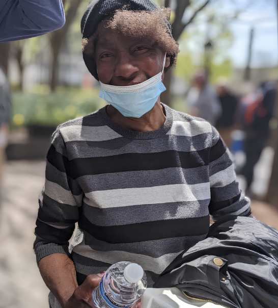

250 hot meals, out the door by 12:30.
We cook in the morning, pack kits before eleven, and run eight delivery routes in time for lunch. Everyone who does it is a volunteer. This site is where the day gets scheduled: who is cooking, what got picked up, and which routes still need a driver.

Neighbors cooking for neighbors
We are not a food bank. We do not hand out boxes of groceries. We make hot meals and bring them to people where they already are.
The food comes from temple kitchens and from grocery rescues, produce and staples that would otherwise be thrown out. About 150 families take turns on the prep rotation in a 6,500 sq ft kitchen we rent. Fourteen student clubs, six from colleges and eight from high schools, help pack the kits and run the routes. Nobody is on payroll.
Dignity is served alongside every meal.
Where things stand
Counts from our own logs, updated as deliveries are recorded.
- 92,000+
- Meals served since we started
- 8
- Locations we deliver to every day
- 150
- Families on the daily prep rotation
- 14
- Student clubs helping out, 6 college and 8 high school
- 6,500
- Square feet of rented kitchen and packing space
- 100%
- Volunteer-run, with no paid staff
Photos from the routes
A normal week, taken by volunteers on shift.




Two ways to pitch in
A morning in the kitchen or one route in an afternoon both make a difference to what goes out at 12:30.
Volunteer on your own
Pick shifts that fit your week: cooking, packing kits, or driving a route.
Sign up to volunteerBring your club or organization
Claim route days for your group and track what your members delivered.
Register your organization